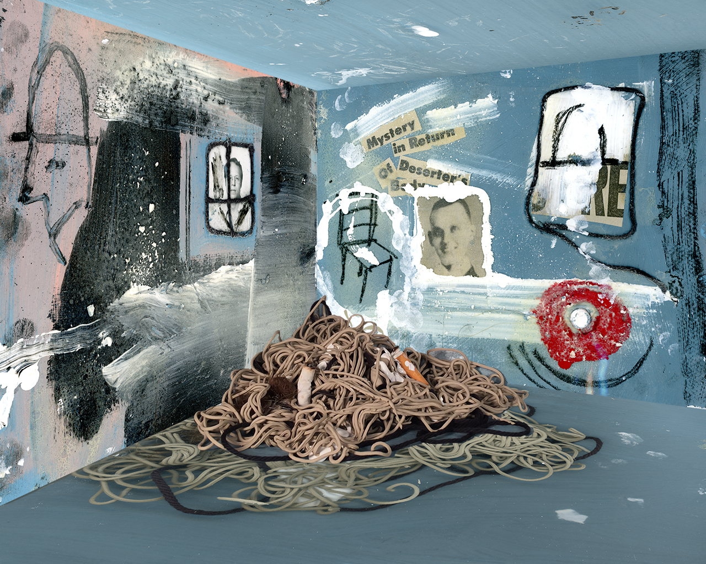

Article 0
Speaking Good
ff
Testing alsdjfila

J am reduced to a thing that wants Virginia. I composed a beautiful letter to you in the sleepless nightmare hours of the night, and it has all gone: I just miss you, in a quite simple desperate human way. You, with all your un-dumb letters, would never write so elementary phrase as that; perhaps you wouldn’t even feel it. And yet I believe you’ll be sensible of a little gap. But you’d clothe it in so exquisite a phrase that it would lose a little of its reality. Whereas with me it is quite stark: I miss you even more than I could have believed; and I was prepared to miss you a good deal. So this letter is just really a squeal of pain. It is incredible how essential to me you have become. I suppose you are accustomed to people saying these things. Damn you, spoilt creature; I shan’t make you love me any the more by giving myself away like this—But oh my dear, I can’t be clever and stand-offish with you: I love you too much for that. Too truly. You have no idea how stand-offish I can be with people I don’t love. I have brought it to a fine art. But you have broken down my defences. And I don’t really resent it …
Please forgive me for writing such a miserable letter.
V.